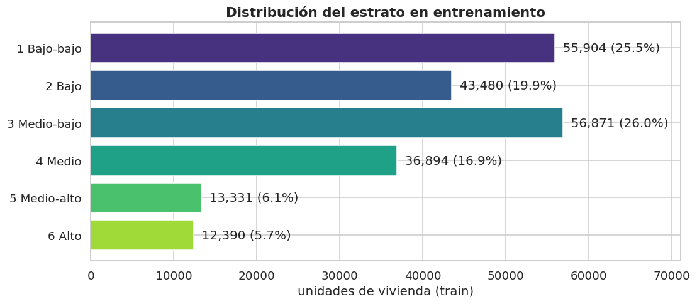
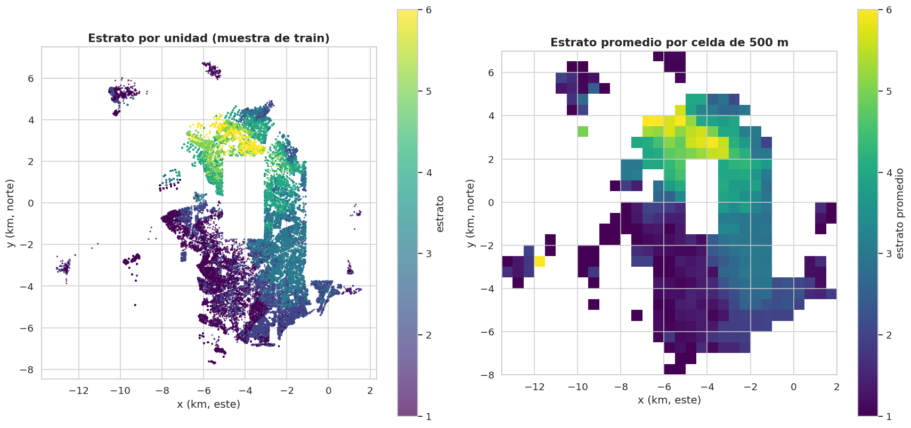

4. Análisis de la variable objetivo (sección 2.1)#
Autores: María Carolina Cantillo Orozco (200179105) y Juan Camilo Oñoro Araujo (200177329)
Variable objetivo: estrato_num (1 a 6), categórica ordinal. Todo el
análisis usa solo entrenamiento.
4.1 Frecuencia de cada clase y desbalance#
# Frecuencia de cada estrato en train y medidas de desbalance. Definen si hace falta
# remuestrear (SMOTE) y qué métrica usar: con clases desiguales el accuracy premia
# a la mayoritaria, por eso se calcula también el accuracy del clasificador trivial.
frec = train[C.OBJETIVO].value_counts().sort_index().rename("casos").to_frame()
frec["%"] = 100 * frec["casos"] / frec["casos"].sum()
frec["% acumulado"] = frec["%"].cumsum() # útil por ser ordinal: "% hasta el estrato k"
frec.index = [C.NOMBRES_CLASES[i] for i in frec.index]
# Razón de desbalance: casos de la clase más frecuente / casos de la menos frecuente.
razon = frec["casos"].max() / frec["casos"].min()
# Entropía de Shannon (logaritmo natural). Al dividirla por log(6), su máximo con
# 6 clases, queda entre 0 (una sola clase) y 1 (las 6 clases igual de frecuentes).
H = E.entropia(train[C.OBJETIVO])
print(f"Clase mayoritaria: {frec['casos'].idxmax()} ({frec['%'].max():.1f}%)")
print(f"Clase minoritaria: {frec['casos'].idxmin()} con {frec['casos'].min():,} casos ({frec['%'].min():.1f}%)")
print(f"Razón de desbalance (mayor/menor): {razon:.1f} : 1")
print(f"Entropía normalizada H/log(6) = {H / np.log(6):.3f} (1 = clases perfectamente balanceadas)")
# Piso de referencia: lo que acierta un DummyClassifier que siempre dice la mayoritaria.
print(f"Accuracy de predecir siempre la mayoritaria: {frec['%'].max():.1f}%")
frec
Clase mayoritaria: 3 Medio-bajo (26.0%)
Clase minoritaria: 6 Alto con 12,390 casos (5.7%)
Razón de desbalance (mayor/menor): 4.6 : 1
Entropía normalizada H/log(6) = 0.923 (1 = clases perfectamente balanceadas)
Accuracy de predecir siempre la mayoritaria: 26.0%
| casos | % | % acumulado | |
|---|---|---|---|
| 1 Bajo-bajo | 55904 | 25.542 | 25.542 |
| 2 Bajo | 43480 | 19.866 | 45.408 |
| 3 Medio-bajo | 56871 | 25.984 | 71.392 |
| 4 Medio | 36894 | 16.857 | 88.248 |
| 5 Medio-alto | 13331 | 6.091 | 94.339 |
| 6 Alto | 12390 | 5.661 | 100.000 |

Interpretación
En train la clase más frecuente es el estrato 3 (26.0 %), muy cerca del 1 (25.5 %); luego 2 (19.9 %), 4 (16.9 %), 5 (6.1 %) y 6 (5.7 %). En el dataset completo el 1 es mayoritario (32.8 %, cap. 1): la diferencia se debe a que train excluye las filas sin coordenadas (66 % de ellas son estrato 1, cap. 3) y los bloques de test.
El desbalance es moderado: 4.6 : 1, y la entropía normalizada es 0.92 (1 sería balance perfecto). La clase minoritaria (estrato 6) tiene 12 390 casos, así que no hace falta sobremuestreo (SMOTE) para que el modelo vea suficientes ejemplos; lo que sí cambia el desbalance es cómo se evalúa: un modelo trivial que siempre dice «estrato 3» ya acierta 26 %, así que el accuracy solo no sirve.
4.2 Naturaleza ordinal#
Confundir un estrato 5 con un 6 no es tan grave como confundir un 1 con un 6. Las métricas estándar de clasificación tratan ambos errores igual; por eso se añaden métricas ordinales: MAE en la escala de estratos, accuracy ±1 y kappa de Cohen con pesos cuadráticos.
4.3 Comportamiento en el espacio#
El dataset no tiene tiempo (es una foto del catastro), pero sí espacio. Mapa del estrato en entrenamiento (puntos y promedio por celda de 500 m):

# Cuantificación del gradiente norte-sur visto en el mapa: se divide train en 5
# franjas de igual número de filas según y_km (quintiles, pd.qcut) y se calcula la
# composición de estratos (% por fila) y el estrato medio de cada franja.
por_franja = train.assign(franja_norte_sur=pd.qcut(train["y_km"], 5, labels=["sur", "centro-sur", "centro",
"centro-norte", "norte"]))
tabla = pd.crosstab(por_franja["franja_norte_sur"], por_franja[C.OBJETIVO], normalize="index").mul(100)
tabla.columns = [C.NOMBRES_CLASES[c] for c in tabla.columns]
# observed=True: agrupa solo por las categorías presentes (qcut crea un Categorical).
tabla["estrato medio"] = por_franja.groupby("franja_norte_sur", observed=True)[C.OBJETIVO].mean()
tabla
| 1 Bajo-bajo | 2 Bajo | 3 Medio-bajo | 4 Medio | 5 Medio-alto | 6 Alto | estrato medio | |
|---|---|---|---|---|---|---|---|
| franja_norte_sur | |||||||
| sur | 49.198 | 46.783 | 3.941 | 0.075 | 0.000 | 0.002 | 1.549 |
| centro-sur | 36.300 | 30.027 | 33.534 | 0.123 | 0.002 | 0.014 | 1.975 |
| centro | 26.843 | 16.259 | 44.244 | 12.552 | 0.097 | 0.005 | 2.428 |
| centro-norte | 8.210 | 1.817 | 27.450 | 41.729 | 12.870 | 7.924 | 3.730 |
| norte | 7.008 | 4.325 | 20.614 | 30.039 | 17.589 | 20.426 | 4.082 |
Interpretación del gradiente espacial
El estrato medio sube de forma casi monótona de sur a norte: 1.55 en la
franja sur, 1.98 en centro-sur, 2.43 en el centro, 3.73 en centro-norte
y 4.08 en el norte. En el sur, el 96 % de las unidades son estratos 1–2
y prácticamente no hay estratos 5–6; en el norte, el 38 % son 5–6. El salto
más grande ocurre entre el centro y el centro-norte (+1.3 estratos). Es la
señal espacial más fuerte del EDA y reaparece en el cap. 6 (y_km es la
variable más asociada con el estrato) y en el cap. 8 (Moran’s I ≈ 0.9).
Implicaciones para la métrica y la validación
Métrica principal: F1 macro (promedia las 6 clases por igual, así los estratos 5 y 6 pesan lo mismo que el 1). Se reportan además balanced accuracy, AUC one-vs-rest macro, matriz de confusión y, por ser ordinal, MAE ordinal y kappa cuadrático (notas de clase 9.5).
Línea base:
DummyClassifier(mayoritaria, estratificada, uniforme) y una línea base espacial (clase más frecuente por zona).Validación: el estrato cambia de forma muy marcada en el espacio (estrato medio 4.1 en el norte frente a 1.5 en el sur), así que una validación aleatoria sería optimista: se usa validación por bloques espaciales estratificada (capítulo 2) con buffer (capítulo 8).
Desbalance: se compara
class_weight=Nonecontra"balanced"dentro de la búsqueda de hiperparámetros (capítulo 10).
# Se registran las decisiones de evaluación derivadas de este capítulo: F1 macro
# como métrica principal (por el desbalance, pesa igual cada estrato) y métricas
# ordinales (MAE, accuracy ±1, kappa cuadrático) porque errar por 5 estratos es
# peor que errar por 1. El modelo base (cap. 10) lee estas decisiones del JSON.
C.guardar_decision("metrica_principal", "f1_macro",
f"Desbalance {razon:.1f}:1 y 6 clases (cap. 4.1): el accuracy premia a la clase mayoritaria.")
C.guardar_decision("metricas_ordinales", ["MAE_ordinal", "accuracy_±1", "kappa_cuadrático"],
"El estrato es ordinal (cap. 4.2): errores lejanos deben pesar más.")
[decisión registrada] metrica_principal = f1_macro
motivo: Desbalance 4.6:1 y 6 clases (cap. 4.1): el accuracy premia a la clase mayoritaria.
[decisión registrada] metricas_ordinales = ['MAE_ordinal', 'accuracy_±1', 'kappa_cuadrático']
motivo: El estrato es ordinal (cap. 4.2): errores lejanos deben pesar más.